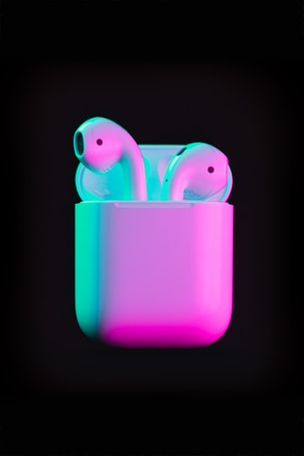

La primera evolución real de los AirPods son los AirPods Pro, unos auriculares que suman la cancelación de ruido a los originales. los AirPods Pro cuentan con cancelación activa de ruido, modo de sonido ambiente, ecualización adaptativa, compensación de presión mediante un sistema de ranuras